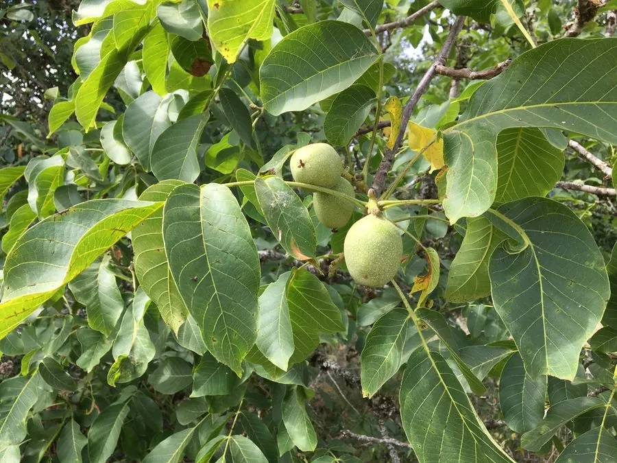

乔木 · 植物界
核桃 Juglans regia

胡桃科落叶乔木，坚果富含油脂与蛋白质，桃仁可生食、榨油，中国栽培历史逾两千年，是重要的干果树种。
- 分类
- 门被子植物门纲木兰纲目壳斗目科胡桃科属胡桃属
- 栖息环境
- 海拔 1000–2500 米的向阳山坡、河谷与村旁，喜光耐寒耐旱
- 地理分布
- 原产中亚至西亚；中国新疆、云南、陕西、山西、河北等地大量栽培
- 保护级别
- 暂无评估；中国未列入国家重点保护野生植物名录
物种志
核桃为胡桃科胡桃属落叶乔木，高 20–25 米，树皮灰白色、老时纵裂，小枝粗壮，髓部片状。奇数羽状复叶，小叶 5–9 枚，椭圆形，全缘或具疏锯齿，揉碎后有清香。花单性，雌雄同株，雄花序为下垂的葇荑花序，雌花序簇生；果实为核果，外果皮青绿色、肉质，成熟后开裂，内果皮木质坚硬并具皱褶，即常见的“核桃壳”，内含脑状种仁。
核桃原产中亚至西亚一带，汉代经丝绸之路传入中国，现新疆、云南、陕西、山西、河北等地广泛栽培，中国是世界上最大的核桃生产国。它喜光、耐寒、耐旱，适宜深厚肥沃、排水良好的土壤，实生苗 8–10 年才结果，嫁接苗可提前到 3–5 年。核桃仁含脂肪约 60%，可生食、榨油、制糕点；青皮可提取鞣质作染料，木材纹理美观，是制作枪托与高级家具的良材。
形态与习性
- 株高20–25 m，树皮灰白色、老时纵裂
- 花期4–5 月，雌雄同株、雄花下垂
- 果期9–10 月，外果皮开裂露出坚果
- 光照喜光，幼树期稍耐侧方庇荫
- 水分耐旱，怕积水
- 土壤深厚肥沃、排水良好的壤土
- 主要用途坚果食用、榨油，木材制家具，青皮作染料
趣味知识
- 核桃仁的形状酷似人脑，民间因此有“以形补形”的说法。
- 核桃的青皮含鞣质，接触皮肤会染成黄褐色，采收时需戴手套。
- 中国是世界上最大的核桃生产国，新疆阿克苏、云南漾濞是著名产区。
- 核桃木材质地坚韧、纹理美观，常用于制作高级家具与枪托。